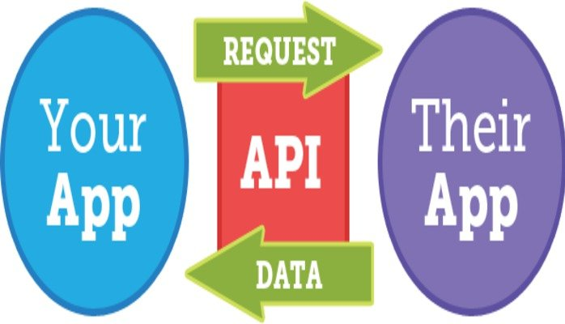
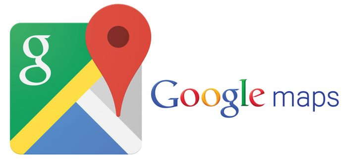

What is API?
As we are to use Microsoft Computer Vision API. We need to know what API is first.
API is an abbreviation of Application Programming Interface. Wikipedia says API is a set of subroutine definitions, protocols, and tools for building application software. This definition is too abstract to understand what it is at a glance intuitively.
I thought I need to describe what API is and why we need that in my words to make other people understand what it is more easily. We neeed to talk about what "Interface" is and how we use the concept in Software Engineering field. You might have heard words like CLI(Command Line Interface) and GUI(Graphi User Interface). You might have some people around you complaining "This application has bad User Interface it is so hard to touch this button." Now, we are more ready to think about thwta User Interface is? User Interface here means somewhere user and software meets and interact with each other. Interface is where two different entities having different features meet and interact.
Where can we use API?
So Application Programming Interface means where two different applications(programs) meet and interact each other. To make two different systems work properly as we intended, we need some functions and protocols, which connect two different systems.
Now you want to make an application suggesting a good restaurant based on information where user is. You want to add new feature which leads user to recommended restaurant. It is hard to add a map related feature for an individual developer because developing an application providing geographic information needs some extra money and time itself. There seems too many hurdles to make this simple restaunrant finding application. We can adopt an already made map application like Google Map, which provides the specific information we want, though. All we need to do is to connect to application and works properly. What we need right now to connect and work both applications together is API.
The definition from Wikipedia again. API is a set of subroutin definitions, protocols, and tools for building application software. We need subroutines(functions to extract some regional information from Google Map) and protocols(communication tools between restaurant application and Google Map service) and tools(tool is quite broad notation; it can include definditions, protocols, and other features like Google Map specified icon or "click" button which come along with using Google Map API).
Hope you could grasp the concept of API. We can advance a step forward to use Microsoft Computer Vision API. On Getting Started page, we will deal with what Microsoft Computer vision API is and how we can get started with that.